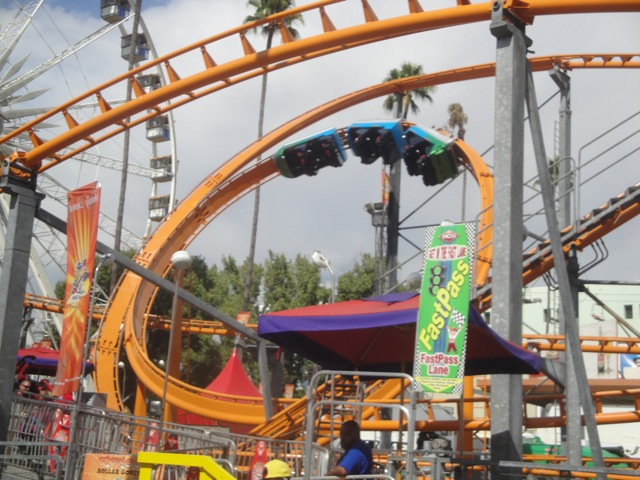
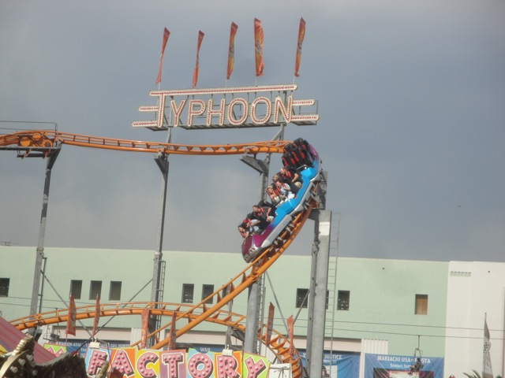
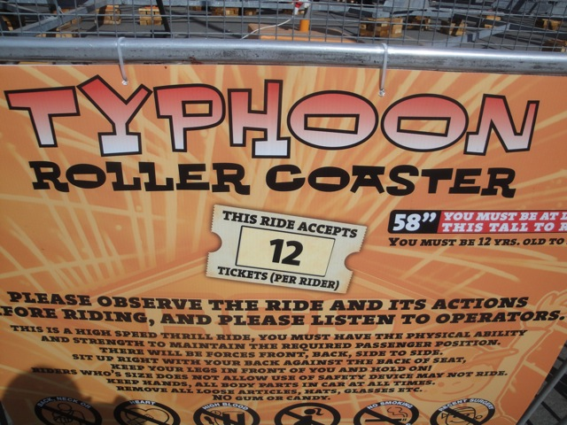

| |
Typhoon Review

All right. This coaster is currently operating at the Puyallup Fair in Puyallup, Washington. But when I last rode it, it was at the L.A County Fair in Pomona, California. So for this review, we're at the L.A County Fair. We get in the cars, pull down the clunky over-padded OTSRs, and head up the lifthill. The lifthill is slow, creaky, and gives you plenty of time to ask yourself "Why the f*ck am I riding this!!?". But seriously, after hearing about how AWFUL this ride was at its original home, Santa's Village near Chicago, Illinois, this made me nervous considering how EVERYONE tore it apart, claiming it to be a piece of sh*t. And on the one hand, this ride looks pretty bad. So I'm not really looking foreword to it. We make it to the top and slowly creep around the turn. Closer, and closer, until BAM!!! We head right on down the spiral drop. We get some speed during this as well as some laterals, though those aren't as much fun as they are uncomfortable. We then rise up a big hill with a sharp turn/transition at the top. This does give you a good SMACK to the head. Ouch, thats unpleasent. But luckily, the padding makes the jolt not nearly as painful as it would've been. So at least its good to see that the padding is doing its job. And then here comes the part of the ride that you're either looking foreword to the most or dreading the most. The crazy drop and incline loop. Well ready or not, BOMBS AWAY!!! We fall down the spiral drop and gain quite a lot of speed from it. And with all that, we just RUSH straight into the incline loop. The incline loop surprisingly, does not bash our heads AT ALL. No headbanging at all. In fact, it actually has some nice hangtime. I'd dare say that I'm having fun. The part that I was dreading turned out to be awesome!!! =) Unfortunetly, the transition out of it is very jerky and there is some headbanging up into the hill. But luckily I managed to brace myself and spared my head. There comes another small curved drop towards the ground. I know there's some headbanging here, but luckily I managed to brace myself again and didn't get hurt. And then comes by far the weirdest part of the ride. The sideways airtime hill. There is NO airtime here at all. None at all. Its not even that fast. Its mostly just slow and awkward. Doesn't really hurt as you're just leaning into the restraint. But there's definetly this awkwardness to the hill. We then go through another turn and hill combo, which pins us to the restraint some more. Thank god for that padding. And then we hit the semi-brake run. Its sort of like a really heavy trim brakes, but then we gain some more speed as we head down another small drop. That bit of speed goes straight into an upward helix that has a bad transition. Brace yourself and use the padding and it'll be fine. But yeah. This sucks. We then go through a couple more unbanked slow and awkward turns. Yeah, its slow and awkward. Then there's just one last tiny drop that leads straight into a turn into the brake run. BRACE YOURSELFS!!!! We survived, and its over. So that's Typhoon. Surprisingly, its not NEARLY as bad as people were making it out to be. Now I will give you this. Its NOT a good coaster. Its very slow, its got a lot of poor transitions, and its very clunky as well, resulting in a LOT of headbanging you'll have to brace yourselves for. But it does have a fun spiral drop and that incline loop is pretty cool. And to add to that, its a very unique ride. Unlike all your Crazy Mice and Backdrafts, there aren't many Typhoons out there. In fact, there are only three in the world. One in France, one in Indonesia, and the one I rode at the L.A County Fair, which now moved to the Puyallup Fair in Washington. So I'd actually give it a go if you're at the Puyallap Fair. It may not be that great, but its bearable and at least its a unique ride that very few can re-capture.
5/10
Location: Puyallap Fair
Opened at Santa's Village in 1998
Moved to the L.A County Fair in 2011
Moved to the Puyallup Fair in 2013
Built by: Top Fun
Last Ridden: September 22, 2011
Typhoon Photos




Home
|